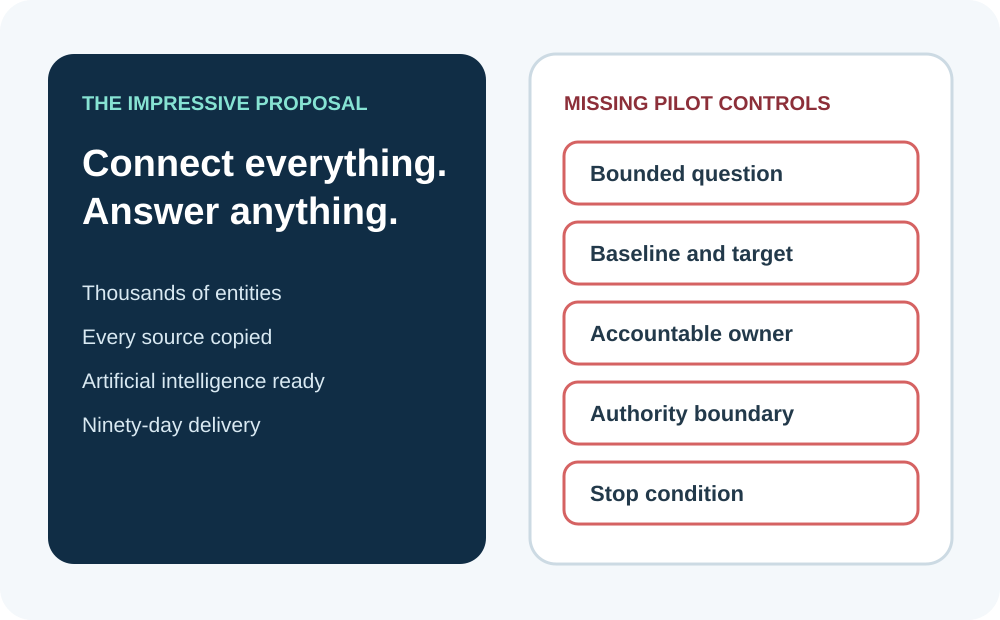
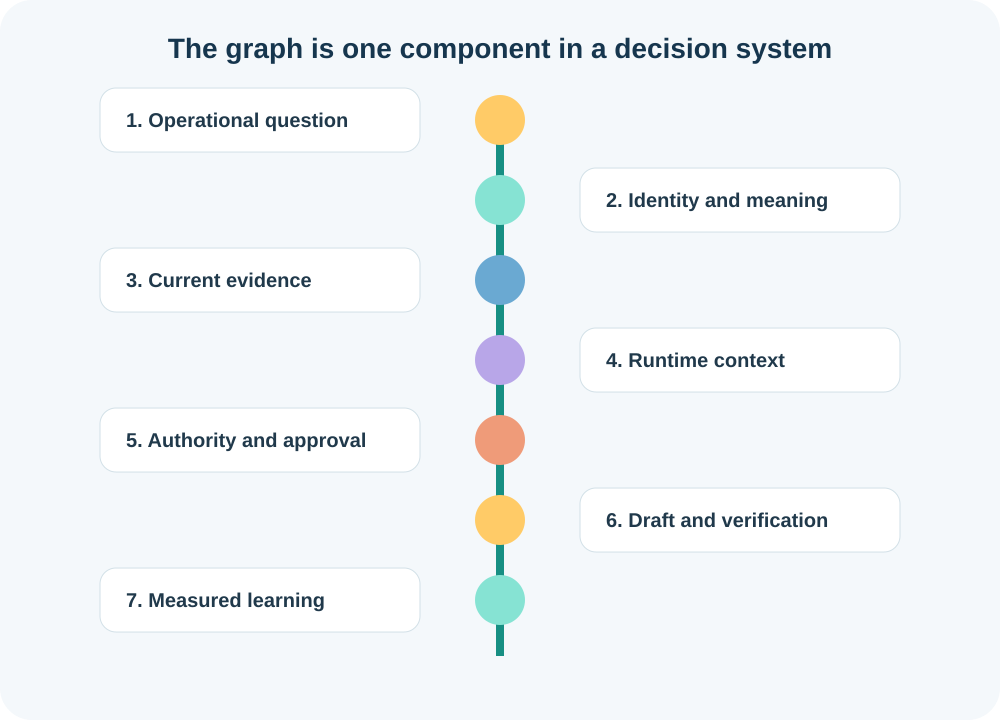
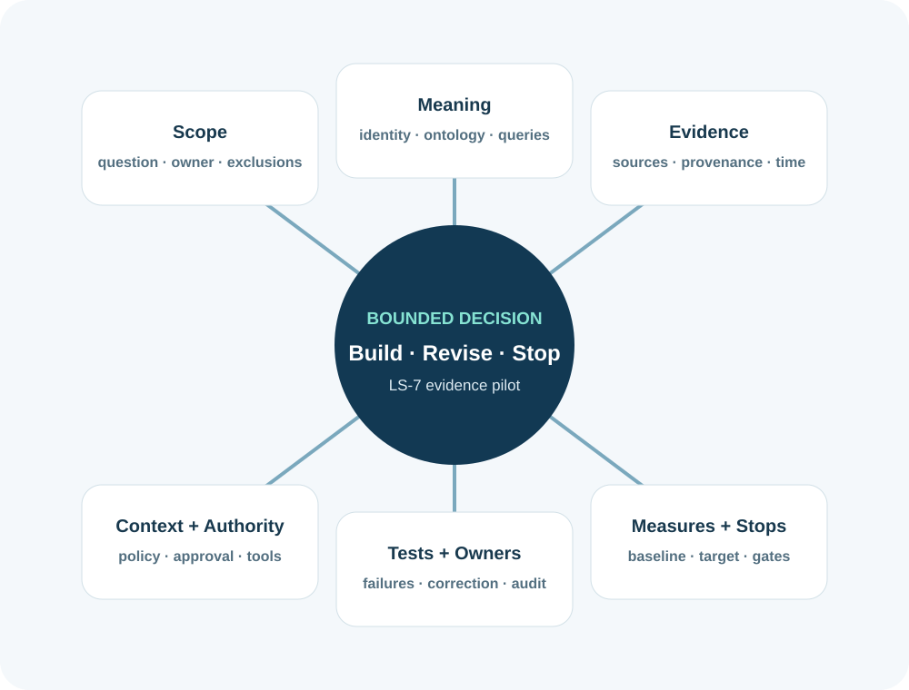
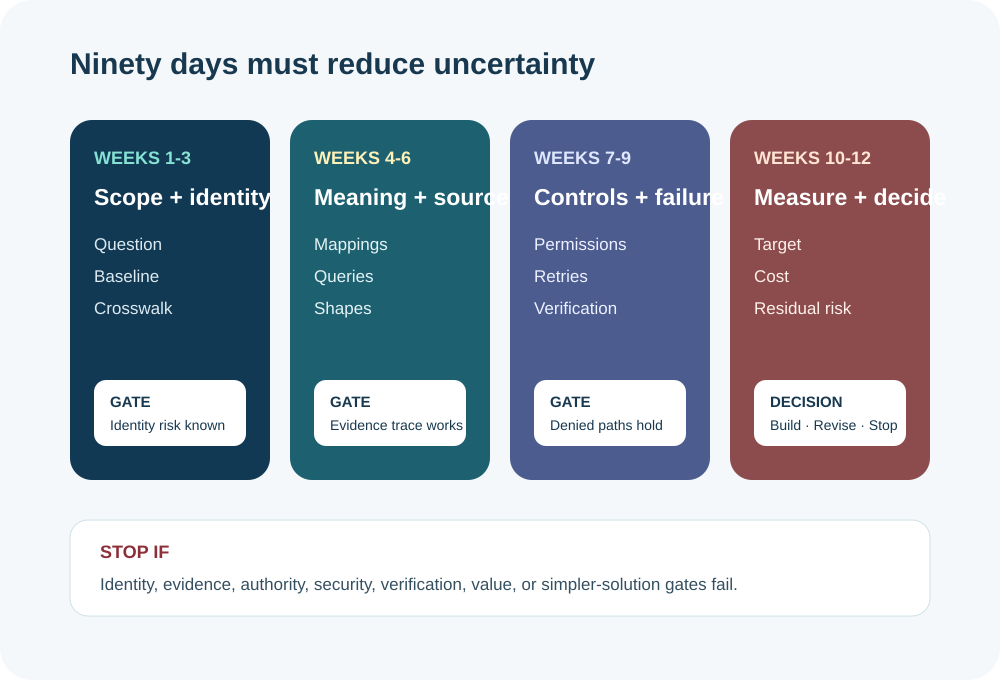
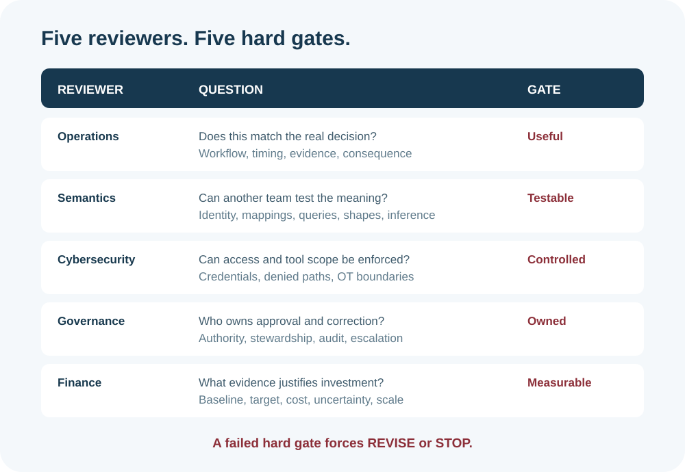

Know enough, permit deliberately, prove the result
Ask whether the evidence is fit, whether this actor may act, and whether the result can be verified.
Decide whether one bounded semantic pilot is worth building, then defend its evidence, controls, value, and stop conditions.
Misconception we will change: A successful knowledge-graph pilot starts by building the enterprise graph.
Ask whether the evidence is fit, whether this actor may act, and whether the result can be verified.
Define identities, validation, policy decisions, tool schemas, request keys, recovery, verification, and audit events.
Name approval thresholds, prohibited actions, accountable owners, review cadence, incident response, and correction authority.
A glossy proposal promises an enterprise knowledge graph for every asset, customer, document, sensor, and decision. It names graph technology, integration tooling, and artificial intelligence. It does not name one operational question, one accountable decision owner, one measurable baseline, one permitted action, or one condition that would make the utility stop.
That is not a pilot. It is an ambition wearing a ninety-day schedule. A pilot is a deliberately small experiment that reduces a named uncertainty for a named decision.
Your job in this capstone is not to admire the architecture. Your job is to decide whether the smallest useful Knowledge Spine pilot should be built at all.

An enterprise graph proposal is marked with five missing controls: bounded question, baseline, owner, authority, and stop condition
Select every item the bounded task needs. Leave irrelevant or unauthorized material outside the packet.
The fictional wastewater case begins with Overflow Event 21 at Lift Station LS-7. Asset, telemetry, inspection, work-order, incident, and procedure evidence sit in different systems and documents. Teams use inconsistent identifiers and terms.
The bounded question is: when Overflow Event 21 occurs, which upstream assets and current evidence should a wastewater supervisor review before approving one draft inspection work order?
One question, one human decision, one draft action, one accountable owner, one baseline, one target, and one ninety-day review create the boundary. Crew dispatch, priority assignment, operational control, work closure, credential issuance, and enterprise-graph publication remain out of scope.
Choose KEEP, REVISE, or EXCLUDE for each proposed boundary.
RDF is not the default answer. Run the Graph Fit Test before selecting it. Are relationships central? Must identities be reconciled? Must meaning be shared across systems? Must evidence carry source, time, and authority? Must rules or constraints be evaluated consistently?
Then ask the defeating question: would a governed table, report, search index, or workflow solve the bounded problem adequately? If yes, use the simpler approach.
For LS-7, the useful work is multi-hop: event to station, station to upstream pumps, pumps to inspections, inspections to observed conditions, conditions to procedures and current work. Relationship traversal, identity reconciliation, provenance, and validation make a graph plausible. The pilot must still prove that value.
Choose the strongest answer, then check it. The feedback explains the boundary.

A connected spine links operational question, semantics, source evidence, runtime context, authority, draft action, verification, and measured learning
The capstone does not start with an empty canvas. It recovers the work already done: triples and identifiers; taxonomies, ontology, and semantic mappings; SPARQL questions; SHACL shapes; bounded inference; provenance and freshness; data-in-place choices; unstructured evidence; runtime context; and the Agent Action Contract.
Each artifact has one job. The ontology cannot substitute for current evidence. SHACL cannot prove truth. Provenance cannot grant authority. A grounded answer cannot create permission to act.
The Evidence-to-Decision Spine keeps those boundaries visible while showing how they cooperate.
Choose Meaning, Evidence, Context, Authority, or Measurement.
Match each ordinary-language question to the job that answers it. Check all rows together, then revise any row that needs another look.
Start with competency questions: Which assets are upstream of LS-7? Which current inspections describe those assets? Which conditions require review under approved procedure? Which facts are asserted, inferred, stale, conflicting, or unknown?
Define only the identities, concepts, relationships, proof queries, shapes, inference rules, and provenance fields needed to answer those questions. Anything else must justify its cost.
Structured data can remain in governed source systems through mappings. Documents can remain authoritative while approved passages are indexed. Materialize only a justified hot path with ownership, synchronization, recovery, and expiry.

A central bounded decision connects to scope, meaning, evidence, context and authority, tests and owners, and measures and stops
Choose QUERY IN PLACE, INDEX, MATERIALIZE, or STOP.
The incoming Agent Action Contract must score at least sixteen of twenty. Every control maps to an architecture component, accountable owner, acceptance test, failure response, and audit record.
The pilot must test allowed, denied, stale, ambiguous, timeout, duplicate, failed execution, failed verification, and corrected-record paths. It may create one draft inspection work order only after current evidence and explicit human approval.
Pilot approval authorizes a bounded rehearsal. It does not grant production credentials, operational-control authority, autonomous dispatch, or final release.
Select every item the bounded task needs. Leave irrelevant or unauthorized material outside the packet.
Weeks one through three prove identity, scope, source authority, and baseline. Weeks four through six prove mappings, competency queries, validation, provenance, and freshness. Weeks seven through nine rehearse context, authorization, failure paths, verification, and audit. Weeks ten through twelve compare measured results with the baseline and decide build, revise, stop, or scale.
Activity is not evidence. A workshop completed is activity. A tested identity crosswalk with known false-merge rate is evidence. A graph loaded is activity. A proof query returning expected bindings under named snapshots is evidence.
Stop conditions belong in the plan before enthusiasm rises: unresolved identity risk, ungoverned access, stale evidence without safe abstention, failed authority controls, unverifiable actions, no measurable improvement, or a simpler solution that performs adequately.

Four phases cover scope and identity, semantics and sources, controls and failures, then measurement and decision
Say the answer before selecting each card. Select all four cards to complete this retrieval check.
Wastewater operations asks whether the question and evidence reflect real work. Data and semantics asks whether identities, meaning, mappings, queries, shapes, and inference boundaries are testable. Cybersecurity asks whether access, tools, credentials, failure modes, and industrial-control boundaries are defensible.
Governance asks who owns meaning, source authority, approvals, correction, and audit. Finance asks what baseline changes, what uncertainty the pilot reduces, what it costs, and what evidence would justify scaling.
A weighted score cannot rescue a failed hard gate. Missing authority, security, accountable ownership, evidence strategy, acceptance tests, or stop conditions forces revise or stop.

Five reviewer rows show operations, semantics, cybersecurity, governance, and finance, each with a separate hard gate
Choose the reviewer who owns each challenge.
Your Pilot Canvas joins the operational question, baseline, Graph Fit result, semantic boundary, source strategy, proof queries, validation, inference, provenance, context, authority, owners, tests, measures, and stop conditions.
Your decision briefing names build, revise, or stop. It must be understandable to an executive, testable by a delivery team, reviewable by security and governance, and honest about assumptions and uncertainty.
The artifact is a planning and investment decision. It is not production code, a credential, a graph-publication approval, or operational authorization.
Complete every hard-gate field, then recommend BUILD, REVISE, or STOP. This artifact authorizes planning and rehearsal only.
| Dimension | Full-credit evidence | Points |
|---|
Choose the strongest answer, then check it. The feedback explains the boundary.
No. Use a graph when governed relationships, identity, meaning, provenance, or rule traversal are central and a simpler approach is inadequate.
One bounded question, one decision owner, one permitted action, one baseline, one target, explicit evidence, and explicit stop conditions can be enough.
Prefer authoritative data in place when governed mappings and query performance meet the need. Index documents for retrieval and materialize only justified hot paths.
No. It reports conformance to declared graph constraints. Factual accuracy and source authority require separate controls and review.
The accountable utility owner may approve the bounded investment and rehearsal. Separate qualified authorities still govern security, credentials, production access, and operational action.
Stop when a hard gate fails, evidence cannot be made fit, authority cannot be enforced, value is not measurable, or a simpler solution is adequate.
Module 20 consumes the exact bounded question, identities, relationships, source choices, proof queries, shapes, inference limits, context contract, action controls, tests, measures, and stop conditions from this canvas.
The laboratory then exposes the design to failures and shows an ordinary iPhone prompt traversing the Knowledge Spine. If the laboratory reveals a failed hard gate, the correct result is revise or stop, not concealment.
You are ready to proceed when another team can implement the pilot without inventing its meaning, evidence, authority, or acceptance criteria.
See the concepts, sources, competency, and evidence boundary behind this module.
Discuss which utility action should act, ask, refresh, clarify, or stop. Community discussion is not governed evidence.
Complete the proposal diagnosis, boundary and Graph Fit decisions, prerequisite mapping, minimum-design challenge, Agent Action Contract handoff, roadmap check, Review Board, Pilot Canvas, and final defense.